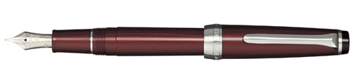
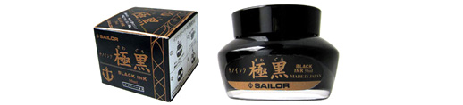
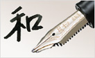

Sailor Fountain Pens is probably the first company to manufacture ball-point pens and cartridge-based fountain pens* for the Japanese market. Originally called "Sakata Manufacture Co. Ltd" (Sakata seisakusho), it was founded in 1911 at Hiroshima. The sailor name was used from 1960 to present. Don't be confused with another company, Pilot Co. Ltd. because the two company's name is similar!
Corporation name
Sailor Fountain Pens Co. Ltd.
Found year
1911
Headquarters
Sumida, Tokyo, Japan
Famous products
Fountain pens, Nano-molecules ink, and original nibs for fountain pens
  
* Although some other companies had cartridge-based fountain pens in sell, the technology was patented in 1954 by Sailor Fountain Pens.